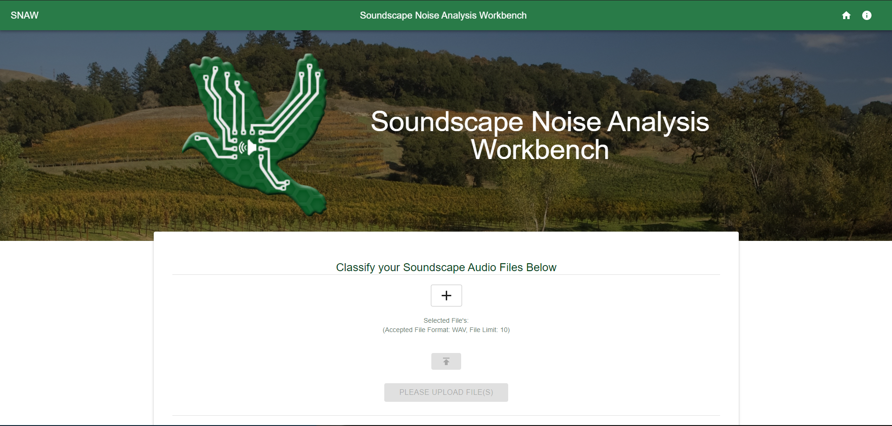
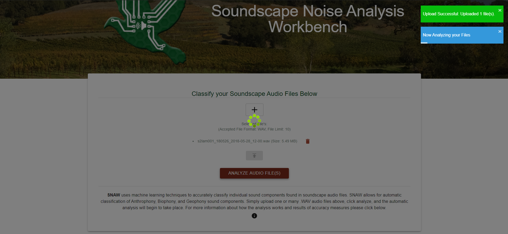
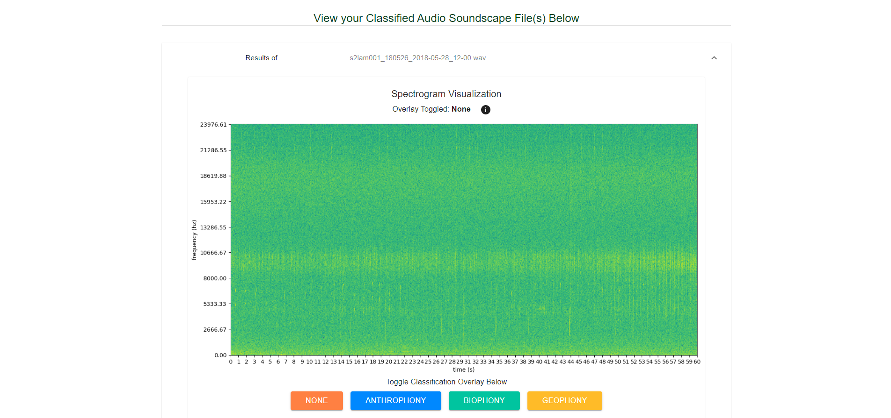
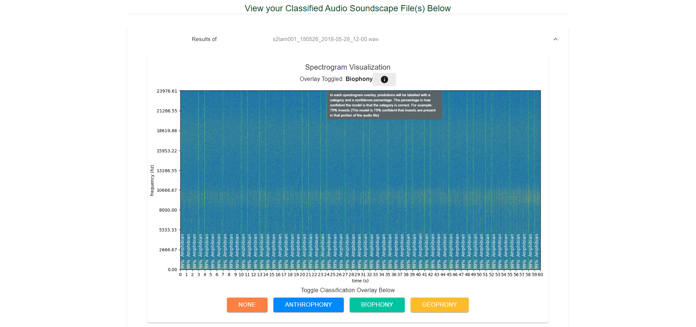
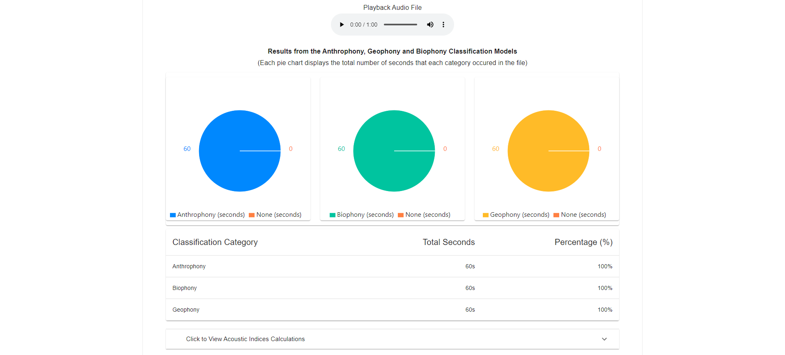
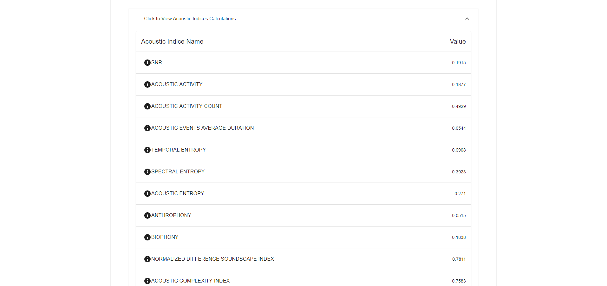
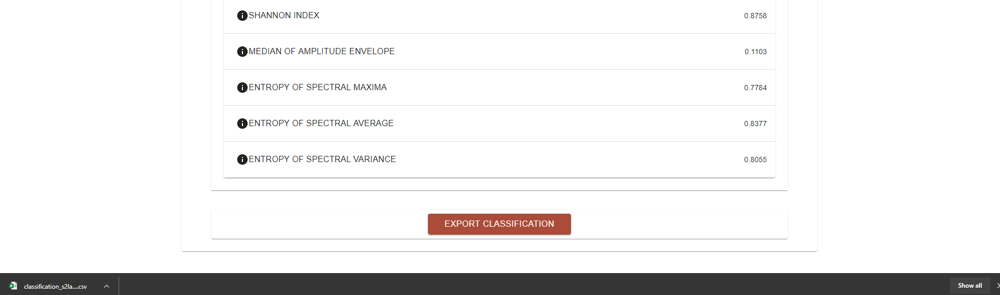
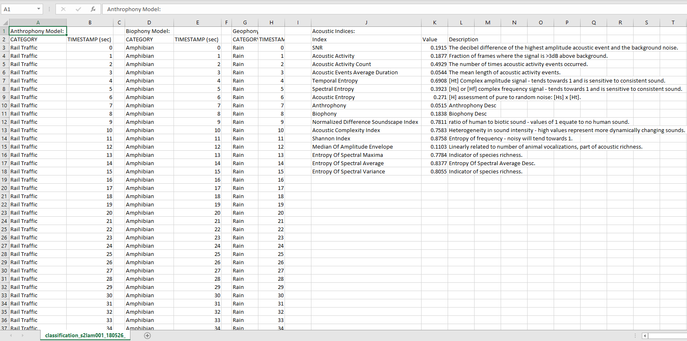

Various environmental changes affect a range of species around the world and as more
species are being affected, proper management and observation are required to understand their response.
Traditional field methods require trained observers to determine species presence/absence and are thus
expensive and challenging to employ at large scales. Using sound to monitor biodiversity
across landscapes is a fairly recent development.
Our clients are working with
Soundscapes2Landscapes.
They are having a problem with an un-user friendly application that requires manual identification in terabytes of sound files. This manual approach is incredibly time consuming
and needs to be automated. We feel confident that we can provide
a solution that is user friendly and automates that identification process with machine learning.
The initial concept for this project was provided by our sponsor, in the form of a
Capstone Proposal.
-
Users will be able to upload audio files.
-
Users will be able to analyze all uploaded audio files.
-
Users will be able to see the results of the analysis visualized.
-
Users will be able to receive the results of the analysis in a timely manner.
-
Users will be able to export all results.
The development process included weekly meetings with our clients. We have iteratively refined our requirements
in each of these meetings. Under the Documents tab, there is a link to our requirements document.
Our envisioned solution is a user friendly web application for use by any researcher or citizen scientist.
This application is called the Soundscape Noise Analysis Workbench (S.N.A.W.), and will allow
users to analyze sound files with the power of machine learning.
The results given to the users include a summary of the audio components in the file,
acoustic indices, and an export of the sound file with background noise masked out. Users will gain a better
understanding of how various sources of noise in soundscape recordings diminish the ability to detect
individual bird species and quantify avian diversity. Using machine learning, instead of
the current manual identification process, will drastically speed up the identification of terabytes of
acoustic data. This solution will allow users anywhere, anytime, to upload their soundscapes for noise analysis, quickly.
Machine Learning Algorithm:
Neural Network
Frameworks:
TensorFlow with Keras
Front-End Web Framework:
React
Back-End Web Framework:
Flask
Version Control:
We will use GitHub for version control. We will have master contain functional code, with each task in it's own branch. Commits need to have concise and descriptive titles.
Issue Tracking:
GitHub Issues for issue tracking.
Project Completion: 100%
First Stage: Creating Requirements 100%
Third Stage: Implementation 100%
Final Stage: Testing and Delivery 100%
Demo
Here are a couple screenshots from our demo.
Uploading Audio for Analysis

Analyze the audio and give results

Visualizing results from analysis (Spectrogram, Pie Charts, Acoustic Indices)





Export classification as CSV file
